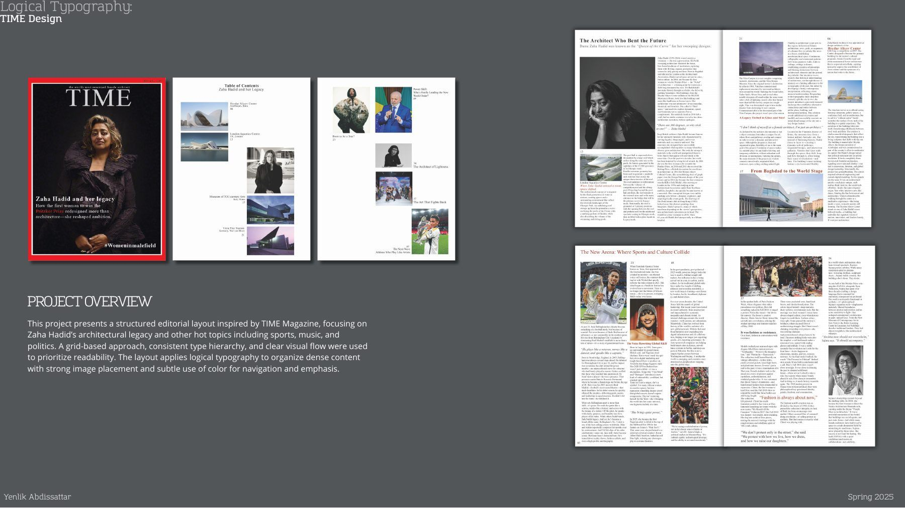
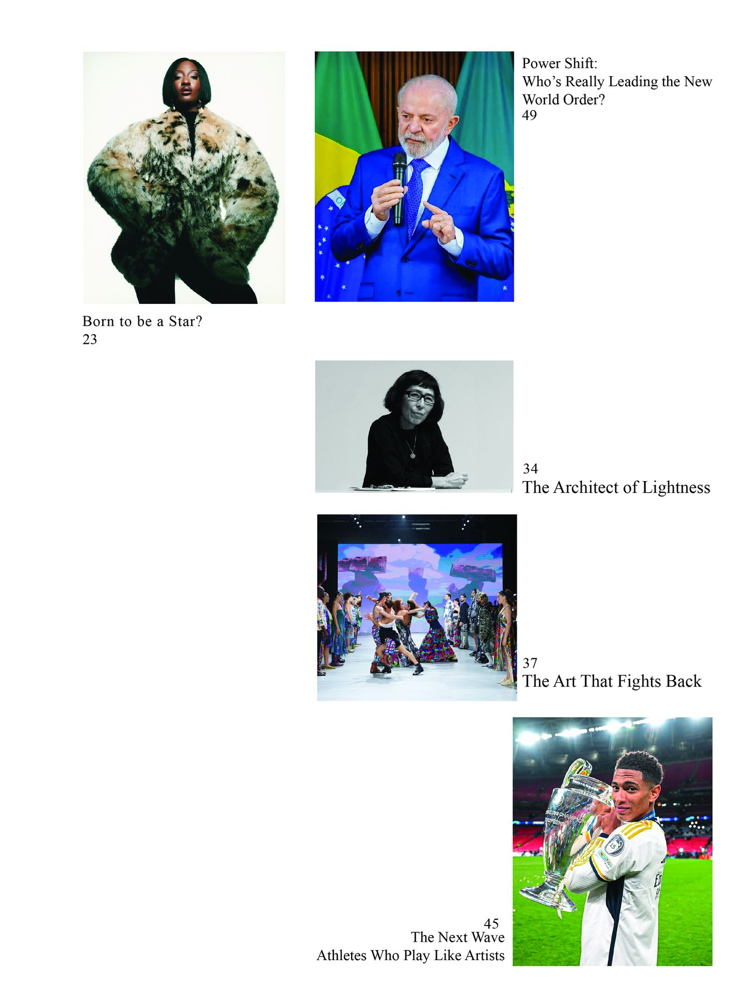
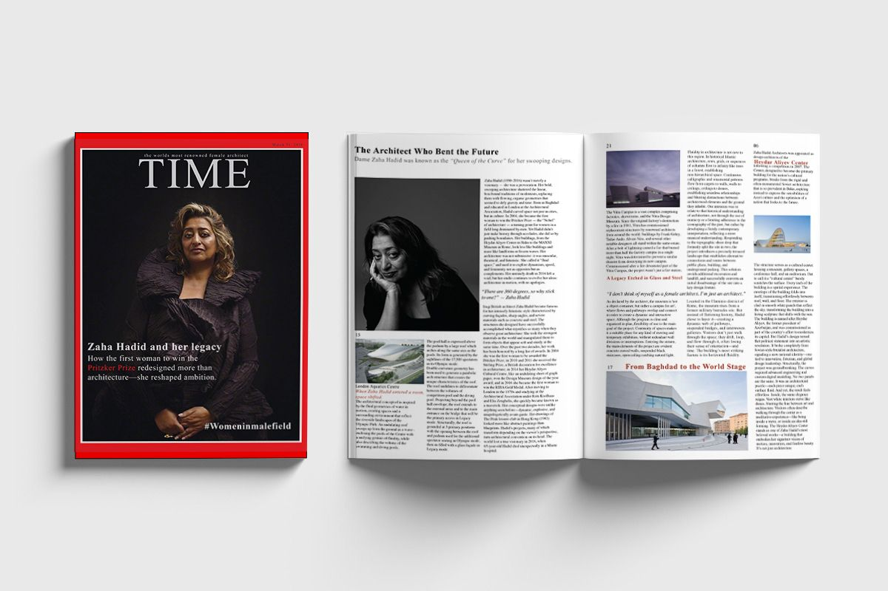
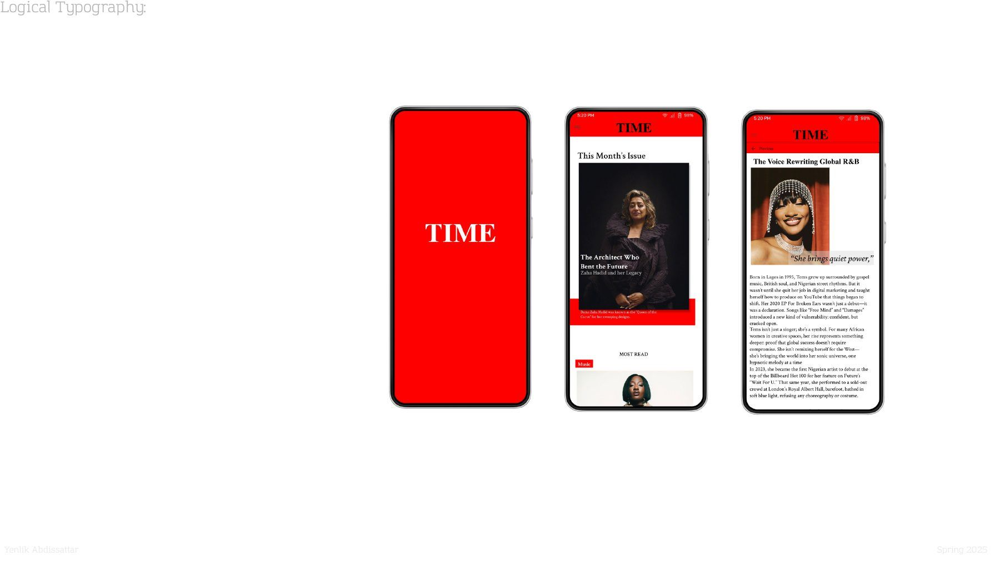
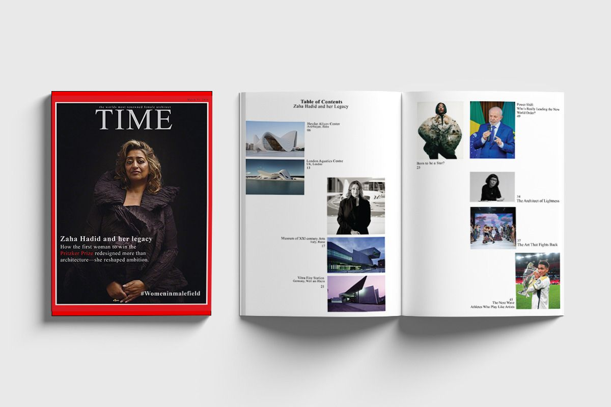
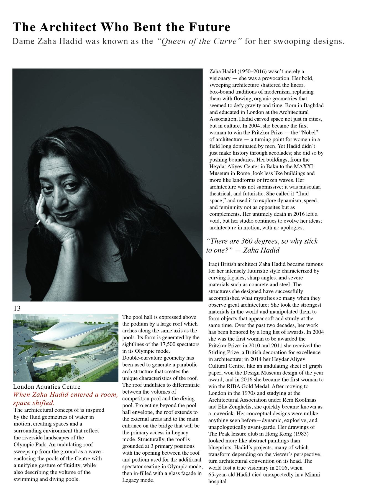
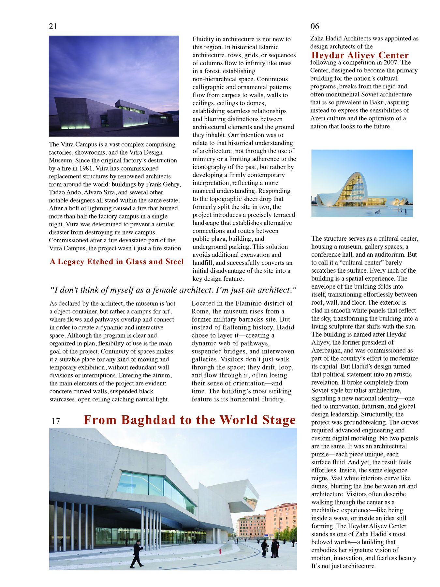
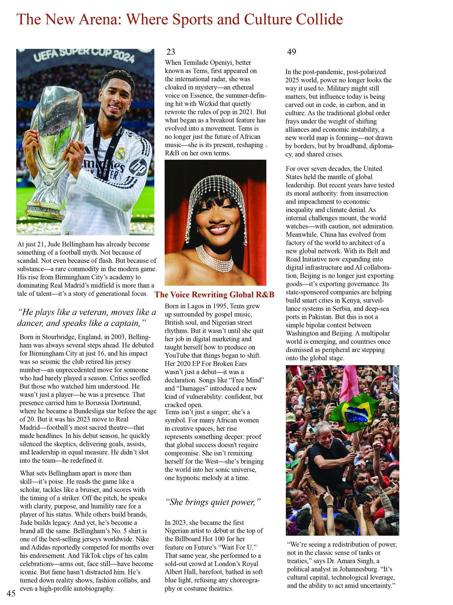
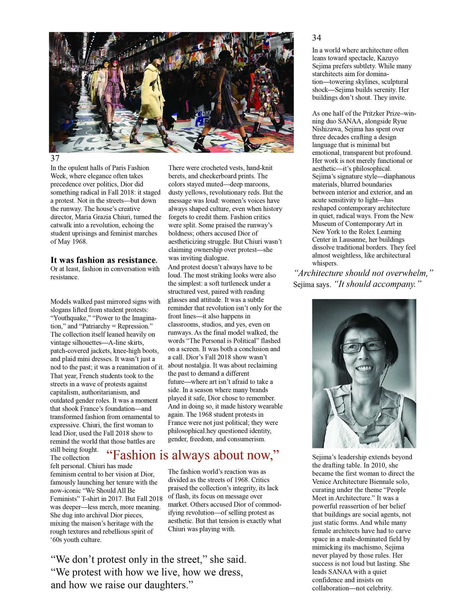

01
Print layout
A grid-based approach and consistent type hierarchy to organise dense content.

Magazine redesign, print to app
Overview
A structured editorial layout inspired by TIME, led by Zaha Hadid's architectural legacy, then carried from print into an app.
Brief
Organise dense content (architecture, sports, music, politics) so it stays readable, first in print and then on screen.
Approach
A grid-based layout, a consistent type hierarchy and a clear visual flow, with strong image placement and a subtle use of colour for navigation and emphasis. The app keeps the modular grid, accessible colour contrast and a consistent type scale.
A grid-based approach and consistent type hierarchy to organise dense content.

Strong image placement, with colour used only for navigation and emphasis.

Cover and spreads printed and photographed as a magazine.

Modular grids, accessible contrast and a consistent type scale for the move to screen.







Next, 05
Silence of the Dawn